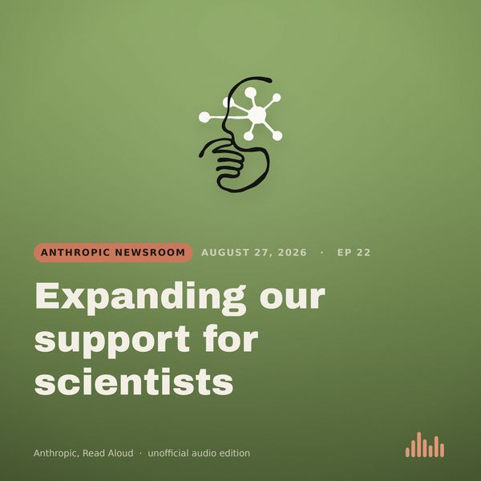
News
Expanding our support for scientists
Anthropic is an AI safety and research company that's working to build reliable, interpretable, and steerable AI systems.

Unofficial · auto-generated podcast
Unofficial audio editions of Anthropic's research, news, and Claude blog posts. Every new post from Research, News, and the Claude Blog becomes a complete spoken episode within about an hour, Mon–Fri 8am–6pm PT.
Feed URL: https://jacobbrooke95.github.io/anthropic-audio/feed.xml — paste it into any podcast app.
Prefer reading? The text feed carries each post in full (Anthropic publishes no RSS of its own).

Anthropic is an AI safety and research company that's working to build reliable, interpretable, and steerable AI systems.
23 episodes · 6.5 hours of listening
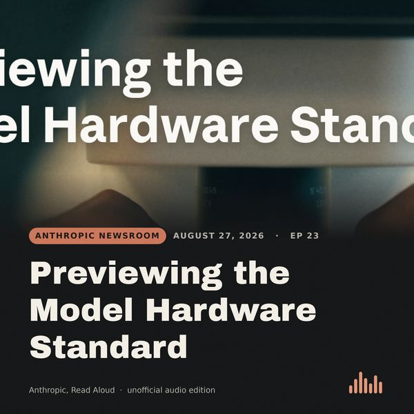
Anthropic is opening a research preview of the Model Hardware Standard (MHS), a shared specification for AI agents to safely operate physical devices, to a first group of scientific research labs and
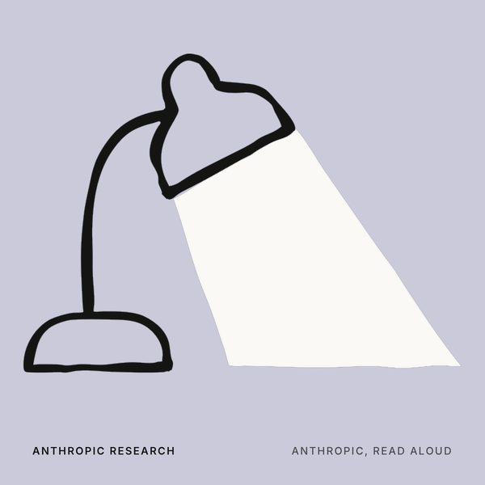
Earlier this year, we ran a pilot giving external researchers access to aggregate, real-world Claude usage data. Three research groups designed their own studies for Anthropic Insights, our privacy-pr

Claude in Chrome is now available on every paid plan and can work through browser tasks without approving each step, with a safety check on every action. Here's how we tested it against prompt injecti
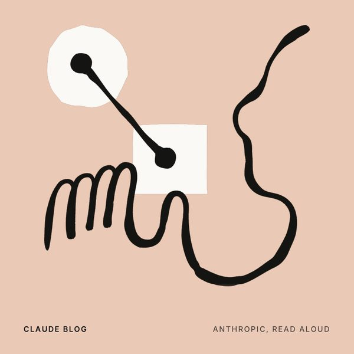
How Warp devised a simple development pattern that anyone can use to create self-improving agents.
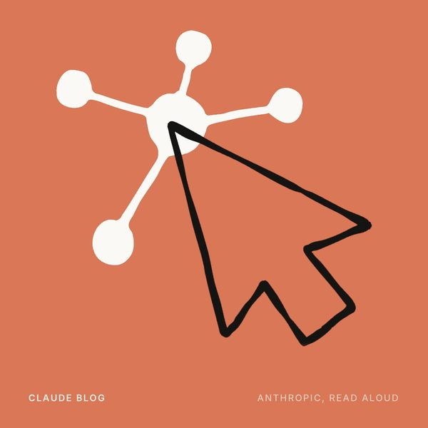
Claude now has its own browser inside the Cowork desktop app. It opens sites, reads pages, and works in them while you keep working. No extension, and your own tabs and logins stay out of it.
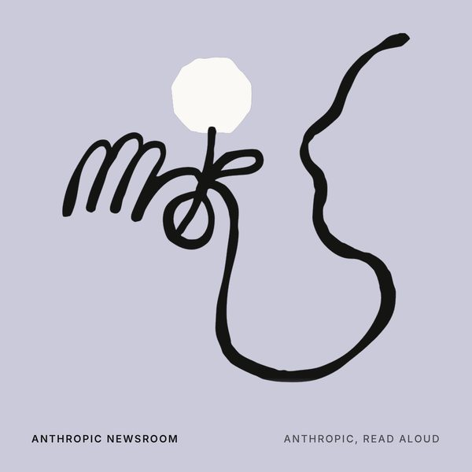
Anthropic is launching a $5 million grant program to fund independent research into how AI impacts users’ wellbeing.
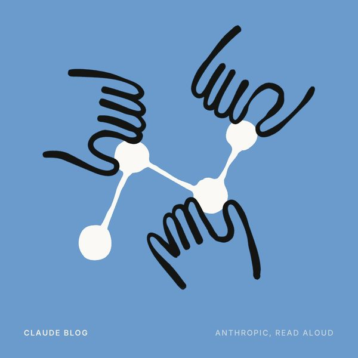
Anthropic and Bain & Company are partnering to help enterprises deploy AI, building on Bain's rollout of Claude to its 19,000 employees.
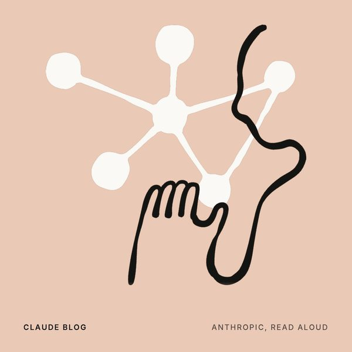
Wherever you work with Claude from Anthropic, it starts from what it already knows about you.
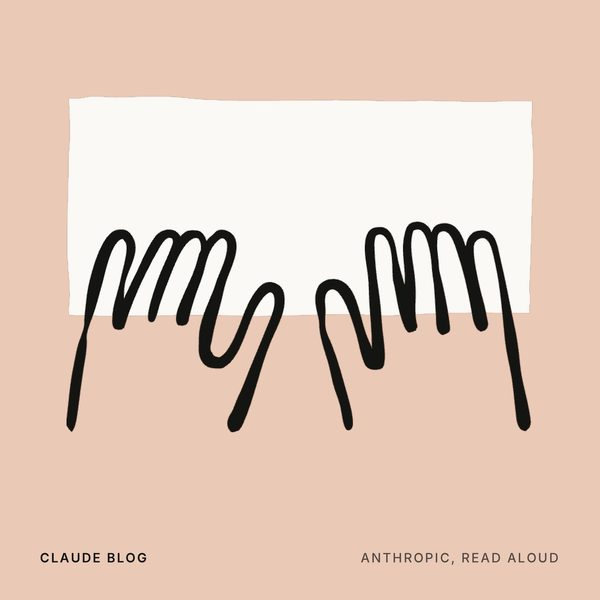
Adam Ward, on Anthropic’s marketing team, shares how he uses Claude to turn one weekly sales report into a personalized Monday briefing for every account executive he supports.
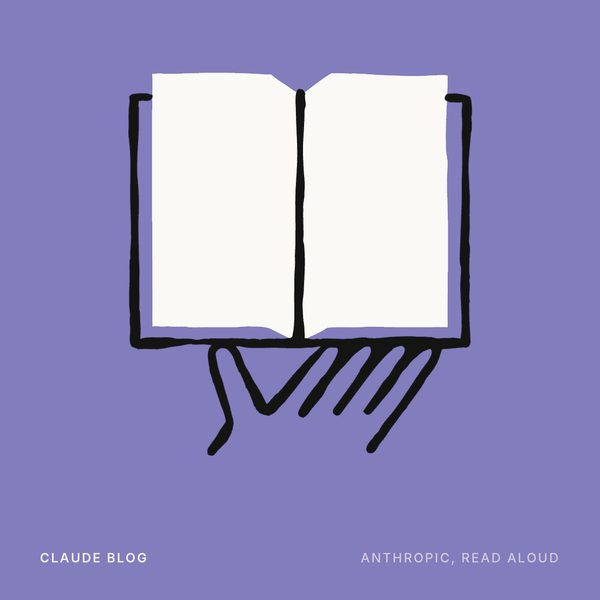
How to transform your software development lifecycle with AI—stage by stage.
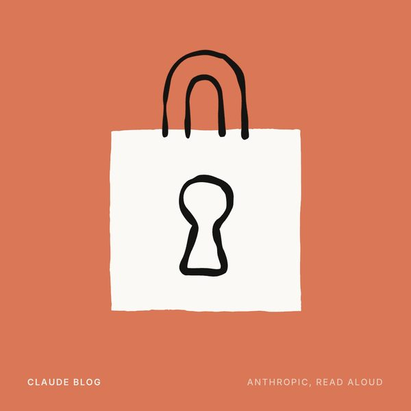
We’re sharing an update on our efforts to help more teams leverage frontier capabilities for cyber defense.
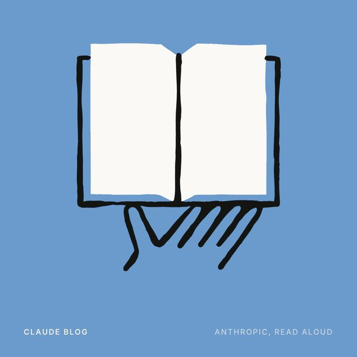
The five rules startups use with Claude Code to ship like teams 10x their size—Anthropic's guide to AI-native building, from everyone-ships culture to AI-native SDLCs.
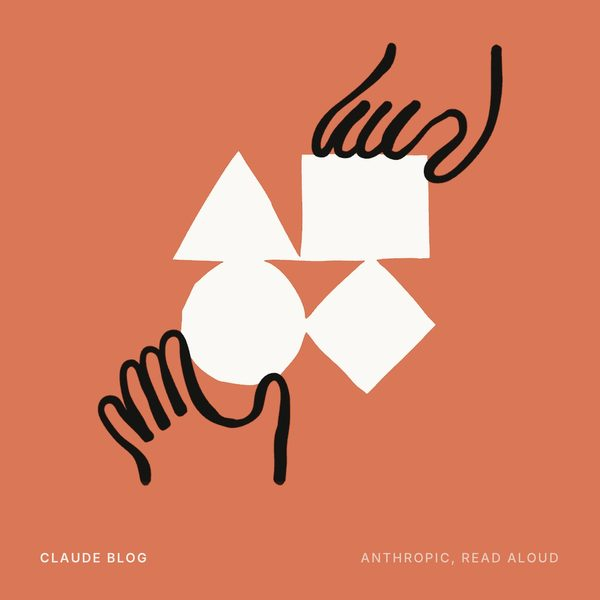
Computer use, the Skills API, and the Files API are generally available on the Claude Platform today. Computer use also adds a new browser use tool for agents that work in web applications. Together t
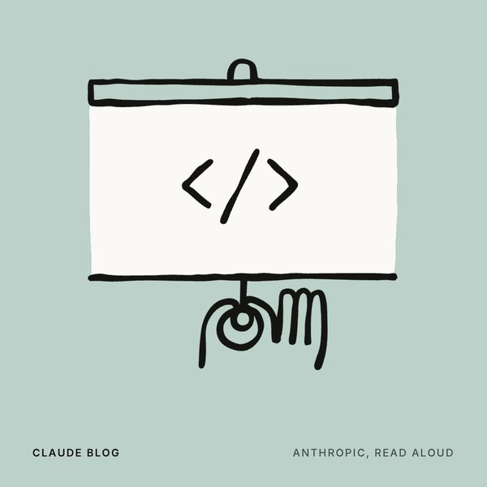
Claude Academy gives users the educational tools they need to learn how to use AI effectively. In this post, we highlight why we’re launching it and how our own approach to teaching and learning influ
The monday team shares lessons from the transition to an agent-first product after they rebuilt the platform around Anthropic's Claude.
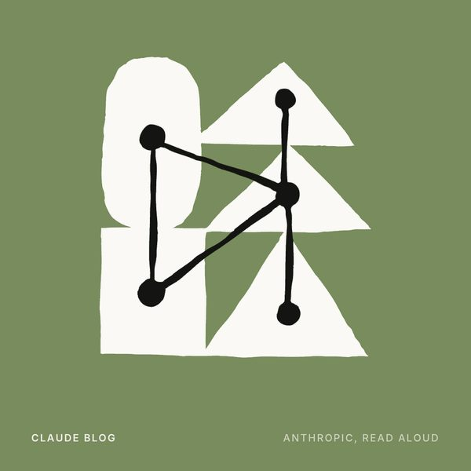
A conversation with Jaime DeLanghe, Chief Product Officer at Slack.
How Anthropic runs AI incident response for CI/CD: an engineer on our Continuous Integration team walks through the Claude Tag agent that detects, triages, and resolves CI failures.
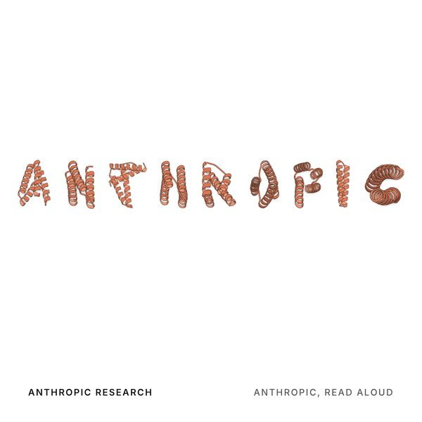
In this post, we share two results that show how Claude can help life scientists increase the pace of their research. In the first, we tested Claude’s ability to design protein binders from scratch, a
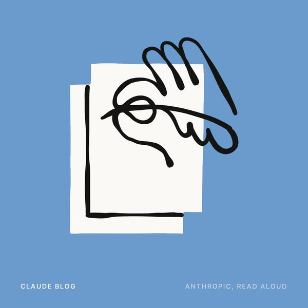
ABC Legal transformed their organization’s AI adoption from scattered experiments to a governed fleet of specialized agents with Claude from Anthropic.
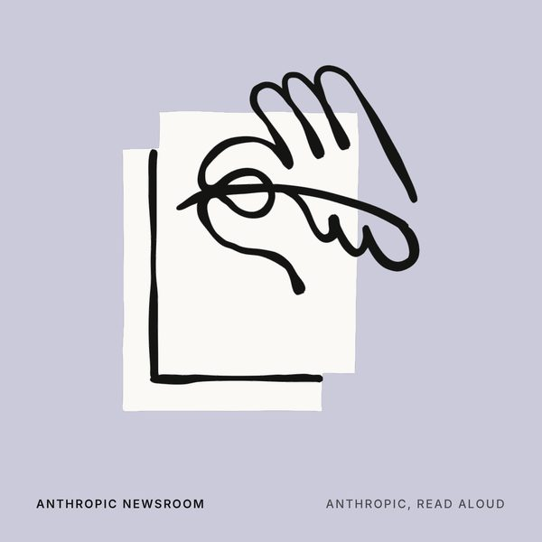
Future Claude models will generate text that contains a watermark. This is a way of determining the likelihood that Claude was involved in writing the text, and we, along with several other major AI p
Practical tips for how to run efficient sessions that get the most value from every token.
Preview your in-progress work in Claude Code as a live, interactive artifact—built from your full session context and shareable with your team.
No episodes match — try a different search or filter.